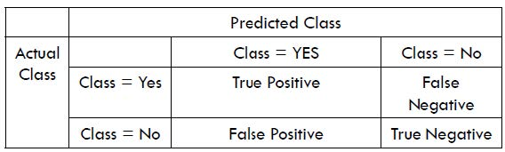

时光只解催人老，不信多情，长恨离亭，泪滴春衫酒易醒。
# 概率空间
概率论的基本研究范围是概率空间。因此，首先需要完成的任务是将概率空间的定义进行严谨化、公理化。
关于概率，我们有一些朴素的、未加证明的结论。最常见的三者为古典概型、几何概型及频率接近于概率。以此为基础的猜想方向，我们可以进行概率的公理化。
首先，我们需要一些测度论的基础知识。
# 预备知识
设 Ω 是一个非空集合，其中的元素称为点，用 ω 表示。我们考虑 Ω 的子集组成的一个集类 F. 并考虑以下的几个性质：
- E∈F⇒Eˉ∈F
- E1,E2∈F⇒E1∪E2∈F
- E1,E2∈F⇒E1∩E2∈F
- ∀n≥2:Ei∈F,1≤i≤n⇒∪i=1nEi∈F
- ∀n≥2:Ei∈F,1≤i≤n⇒∩i=1nEi∈F
# 条件概率与独立性
# 条件概率
设 (Ω,F,P) 是一个概率空间，B∈F, P(B)>0, 则 ∀A∈F, 记
P(A∣B):=P(B)P(AB)
称其为在某事件 B 发生的条件下，事件 A 发生的条件概率 (conditional probability)。
基于上述定义，立刻可以得到
P(AB)=P(B)P(A∣B)
该式称为概率的乘法公式。
下面给出一个条件概率的例子。
在肝癌普查中发现，某地区的自然人群中，每十万人内平均有 40 人患原发性肝癌，有 34 人甲胎球蛋白高含量，有 32 人既患原发性肝癌又出现甲胎球蛋白高含量。
将某人患原发性肝癌事件记作 C, 某人甲胎球蛋白高含量事件记作 D, 则
P(D∣C)=P(C)P(CD)=4×10−43.2×10−4=0.8P(C∣D)=P(D)P(CD)=3.4×10−43.2×10−4=0.9412
因此，D 事件发生使得 C 发生的概率从 4×10−4 升高到了 0.9412, 即条件（信息）可以影响事件的发生概率。
# 混淆矩阵
将上面的例子一般化，就得到了混淆矩阵，这是对一个正负分类器的重要评价方式。
一个混淆矩阵中各项如下：

其中各项含义如下：
- 条件阳性 (Condition Positive, P): 即样本中的正样例数量。
- 条件阴性 (Condition Negative, N): 即样本中的负样例数量。
- 真阳性 (True Positive, TP): 分类器正确分类为正的样例数量。
- 真阴性 (True Negative, TN): 分类器正确分类为负的样例数量。
- 假阳性 (False Positive, FP): 又称第一类错误 (Type I Error), 表示分类器错误预测为正样例的情况。
- 假阴性 (False Negative, FN): 又称第二类错误 (Type II Error), 表示分类器错误预测为负样例的情况。
基于以上各项，我们可以定义一些评价指标：
- 准确率 (accuracy) 定义为
ACC=TP+TN+FP+FNTP+FP
- 真阳性率 (True Positive Rate, TPR), 又称灵敏度 (sensitivity rate)、召回率 (recall rate)、查全率 (hit rate)。定义为
TPR=PTP=TP+FNTP=1−FNR
- 阳性预测率 (Positive Predictive Value, PPV), 又称精准率 (precision value)、查准率。定义为
PPV=TP+FPTP=1−FDR
- F1 值 (F1 measure) 是查准率与查全率的调和平均：
F1=TPR+PPV2×TPR×PPV
# 全概率公式
若事件 {Ai}i=1∞ 是样本空间 Ω 的一个分割，即诸 Ai 两两不相容，且 ∑i=1∞Ai=Ω, 那么
P(B)=i=1∑∞P(Ai)P(B∣Ai)
称为全概率公式 (low of total ability)。可以看出，全概率公式实际上是分类讨论的形式化表述。
# 贝叶斯公式
# 应用
- 郑瀚 Andrew: 概率图模型（PGM）：贝叶斯网（Bayesian network）初探
- Bayesian network 与 python 概率编程实战入门
- VAE